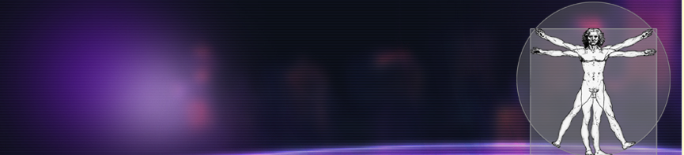

1. Autoría

| Título | ¿QUÉ ESCONDE EL HOMBRE DE VITRUVIO? |
|---|---|
| Descripción | En este Recurso Educativo, para alumnado de 2º de Matemáticas de Educación Secundaria Obligatoria se vincula el estudio del famoso dibujo de Leonardo da Vinci, "El Hombre de Vitruvio o Estudio de las proporciones ideales del cuerpo humano", con los conocimientos matemáticos sobre proporciones, números irracionales, planteamiento y resolución de ecuaciones de 2º grado, uso de herramientas matemáticas geogebra y calculadora. |
| Autoría | Susana Morales López |
| Licencia |
Este contenido ha sido creado con eXeLearning, el editor libre y de fuente abierta diseñado para crear recursos educativos.